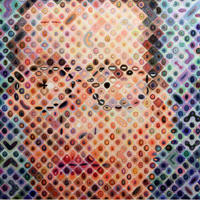

|  | Rex Twedt was just an ordinary kid from Omaha, Nebraska. After graduating from Iowa State University with a degree in Biochemistry, he began working at Cargill as a lab technician. Then, one day... he quit his job at the lab and returned to school. Now, he is a Medical Illustrator! He spends his days creating medical illustrations, using his powers to help the world. When he isn't studying, Rex enjoys reading, playing guitar, and meandering through the museums of Chicago. |